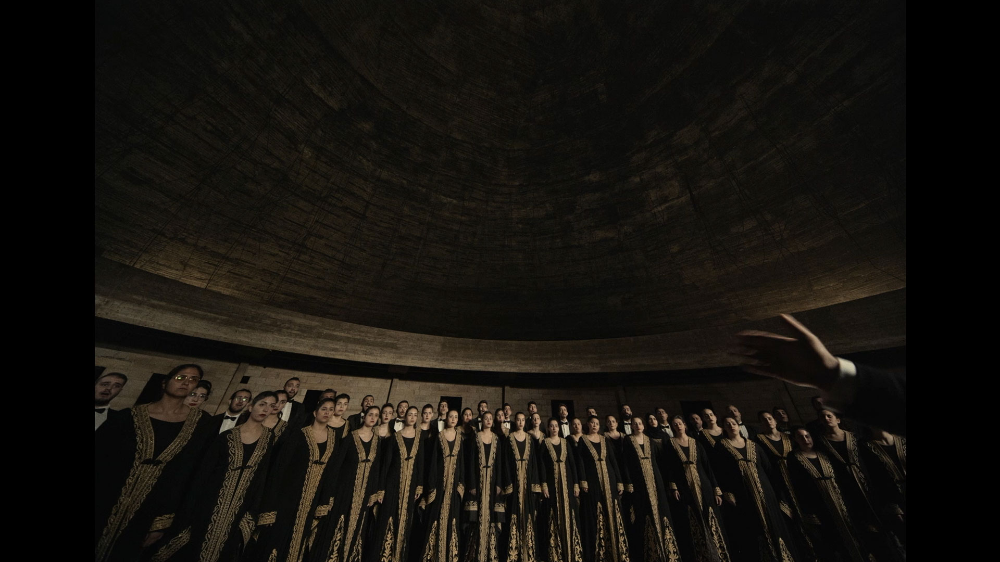
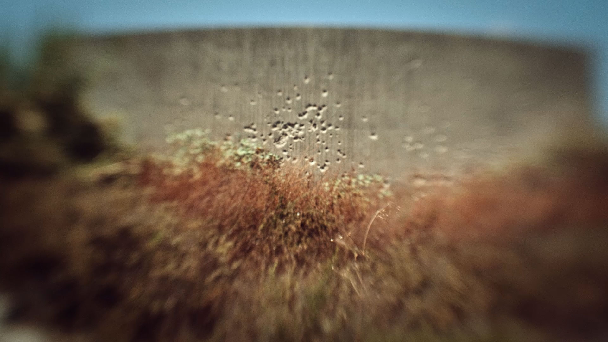
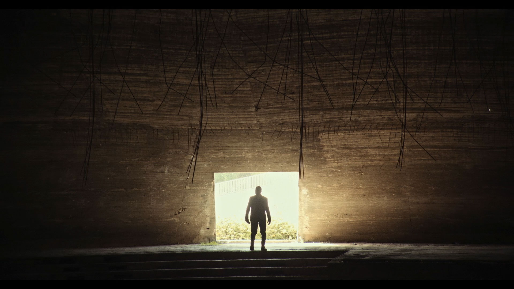

THE
DOME.
The unfinished experimental theatre in Tripoli.
A building
that listens.
An uncompleted structure. Raw concrete walls. A singular reverberation.
The Dome forms part of the Rachid Karami International Fair designed by Oscar Niemeyer. Construction was halted during the Lebanese Civil War, leaving the experimental theatre without the acoustic treatment intended for a finished venue.
That unfinished quality has become its defining sonic character. Long echoes shape every gesture and performance within the space.

Sound as
an intervention.
Since 2010, Firas El Hallak has approached the Dome as a site for sonic experimentation and a reflection on Tripoli's stories and identity.
Through a series of collaborative recording sessions, participating musicians respond to the building's acoustics, negotiating between composition, improvisation, and the space's own sonic behavior.
The Dome Sessions considers how a neglected architectural monument can become a setting for artistic exchange and renewed public imagination.
A place in fragments.



